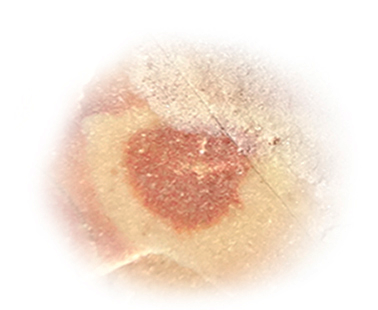

Prior to the break of day, the earth resembles outer space. First, it is
silent. It’s a kind of silence that triggers a sense of vitality rather
than thought. The body becomes much more palpable with its parts and
functions: you have a skin, a head, feet, respiration. Then, it is dark.
Without sunlight, the visibility range extends further into the space,
and you see other luminous bodies, such as the stars. It is also cold,
so that when you step out into the fresh air, you don’t want to sleep
anymore, you are awake.
At 5:40 on the island of Patmos, all three of my fellow travelers are
sleeping. Their rooms, with open doors, merge to a vast balcony that
protrudes from a hill. I am there. Barely a few minutes ago I was also
sleeping, tucked under a giant blanket in infinite comfort. But the
determination I feel now, and the wait for the sunrise, an almost
journalistic wait, is better.
Often, when I am awake to see the sunrise, I actually don’t see the sun
rising. Morning often comes with a series of incremental changes of
color, which escape observation, but which I am trying to observe now.
For example: red slits appear in the sky. Widening, they form screens in
the foreground, in which you could watch clouds pass at a depth. The
clouds move as slowly as, and look like, camels. Initially, everything
seems to be done with pencil dust; but soon colors claim boundaries and
intensify. Of all the preceding obscurity, green emerges with such
brightness that it becomes impossible to mistake for another color. But
it is orange, for some reason, that is reflected on the sea. An
ephemeral win in the competition with blue, which is eternally reflected
on all seas.
The sun moves, and morning finds a different longitude. It is an
occurrence that comes once a day only as observed from our vantage
point, but morning itself is continuous.
And then there are other mornings, concurrently taking place by the rise
of other suns over other sets of planets. Cycles of light and darkness
alternate around countless spheres, which themselves circle gigantic
orbs distributed in the vast texture of the universe. Without halt they
spin and whirl in a hardworking order like the insides of a mechanical
watch.
It is a day, again.
If you’ve ever tried to write down or remember your dreams, you must have noticed that dreams dissipate with the day. It is other words, especially, that break them apart: to hold a dream you must neither speak about nor hear anything else, and nor should you read. Just like a night’s dreams, dreams of life are often diluted by the unsculpted body of the everyday until they have no density of their own. Here we have our first rift.

Although all evidence points to the contrary, I actually don’t like to
think in dichotomies. But placing my job as a data analyst side by side
with my dream to become a novelist, I can’t help but conclude that they
are, in many ways, fundamentally contradictory to each other.
It is not only that data analysis is a defining tool of our times and
novel-writing essentially a 19th century craft; consider above all how
these two things approach complexity. Data analysis starts out from a
plethora of complexity and tries to reduce it into simplicity, and
that’s how it makes sense of things. Literature, on the other hand,
escalates the complexity even further by unfolding the pleats of life.
It adds yet another character; yet another story; yet another world to
ours. It shows every minute detail; it opens up, up, up, until we have
splinters so small, they can serve as the building blocks of a bigger
thing. A bigger thing which we have known, we have felt, perhaps even
lived through, but haven’t been paying attention to; literature gives it
shape and expands it into a defined universal truth, and that’s how it
makes sense of things.
Their tolerance to complexity governs their approach to time. Data
analysis is always in a hurry to compute, whipping time’s back, while
literature has a richness and warmth that makes time malleable, where
you can write a hundred pages over a period of months to describe two or
three minutes. They embody such different spirits; yet there they are,
both of them, in my life.
Kronos is a Titan in Ancient Greek mythology who eats his own
children and represents sequential time. I perceive chronology as a
shared and external yardstick, which lets you meet a friend at the foot
of a tower, say, exactly at noon.
The rhythm and repetition
implied by the notion of kronos undoubtedly exist in nature:
the motion of celestial objects, sleeping and waking up, seasons, the
month, the day. We call this time linear, but it is also evidently
periodic. A year comes, then a year after that: if we didn’t number
them, would we fall into a loop?
Then again the world, just
like us, has an end; one to which it moves closer and closer with each
passing year. The number of years is therefore also not a mere
construct. It is a continuous progression through repetition like
turning wheels, which carry the car along the road.
So it is
real, kronos, like a giant clock hung above the sky, and I like
it because it gives us synchronicity and unites us this way.
Kronos was the word Ancient Greeks used to
designate time, but it wasn’t the only one: there was also
kairos. Kairos means weather in modern Greek, but it
is still the word they use for time when they say, for example, “It’s
time for me to leave”. Kairos takes into account the
singularity of each moment like beads broken free from the chain of
chronology. It is defined as the opportune moment to act: now is the
time to release the arrow, now is the time to rise, now is the time to
confess.
Kairos seems to me to be some inner measure that comes from the
wisdom of how to live. It is an answer and a contribution to the world;
it is your waters into its majestic river.
Just like we don’t see the rule but we see the apple fall, is time
something that we don’t see but is as fundamental to life as gravity?
Then what do we see as its manifestations? What is in this world that
comes from the heart of time; is not time itself, but is
of it?
Let’s think of sheet music: all notes are there on paper, existing
simultaneously. But to hear the piece, one must play the notes one after
the other. This is the way how we, humans, perceive music. In the same
sense, time could be a method in which we perceive reality. What other
methods could there be? Can one trace the score with her eyes and feel
the music all at once? Or as Rabindranath Tagore says, a butterfly would
simply eat the paper and that would be how it understands the
music. But we comprehend things when they are put into
narratives and presented sequentially: take stories, career paths, life
itself with birth and death as its tremendous beginning and end. So, is
chronology central to us after all? Is linearity not to be held in
disrespect?
For a few months a few years ago, I used to wake up very early in the
morning and read War and Peace. Tolstoy doesn’t seem to believe
in free will and makes fun of Napoleon and the Russian general Kutuzov
for buying into the illusion that they can make anything happen. What
they actually do, especially in times of war - as far as Tolstoy is
concerned - is claim existing situations as the outcome of their own
decisions. What happens happens like in the progression of a giant
machine or the temperaments of an ocean. Tolstoy was a firm believer in
historical determinism.
Ironically, I felt both very much in
control and completely free those mornings when I woke up around five or
six to read. Yes, I understand that my actions, even if not predestined,
are completely contingent: the sun is unveiled and I move my chair a
little to the right or a little to the left. But this is normal, since I
am a unit among others. It is only understandable that my actions depend
on the position of the sun, the hour my bus arrives at the station, a
sentence my mother says, or the coming of spring.
A more
disturbing hegemony than that of the sun finds the form of an employer,
to whom I hand over my freedom for the working day to decide what I do,
when I go to lunch, when I come to work and when I leave. In my case, my
employer has decided I leave at 17:30 - a twelve-hour rupture from the
freedom of my mornings with War and Peace. Or it would be, if
we ever really left work, if the rest of one working day was in fact not
a recuperation to be able to serve the next.
Why is it, that
we use “free” as an adjective to indicate having time, and say, for
example, Are you free tomorrow? What is it that makes us unfree
when our time is taken from us, or is tied up to a particular task - are
we still not free if that task is of our own choosing, our own
aspiration? Or is having one’s time to oneself connected with freedom?
“Time be thine,” was a farewell for the characters of Shakespeare. What
a confidence, what a wish. Time be mine!
Let me ask: but
isn’t freedom an essential thing? Is a free being not always free?
Always, in captivity as well as in workplace?
Or is freedom
an action?
I believe that waking up is the closest thing to being born, but of
one’s own free will. By waking up one re-enters the chronology, the
sphere of common time. There, inside this time, are our contemporaries.
These are the people we hold responsible for all present adversity; and
this is true, since there is no one else. But for the same reason, they
may well be the most invaluable of all beings: those with whom we share
an intimacy, and a destiny, of having met here.
One of the
most prominent traits of despair is that one doesn’t want to get out of
bed. Why? Perhaps because it is not easy to step back onto unconducive
land. A dignified life requires coherence between speech, act, and
truth; but the prevailing method is imitation of false success.
Appalled, one succumbs to inertia.
Courage comes from the
Latin root cor, meaning heart. An ancient definition of courage
was to tell the story of who you are with your whole heart. Waking up
willingly is an act of courage; it is a way of saying “Yes, today I want
to live again.”
But there is one more step, one more itch.
The courage to live is so hard to gain that when we gain it, we seem to
celebrate it for its own sake. But with what to fill life after that?
Once the courage to live is there, how to live? What should be the
content of life, its essence?
The light from the day I was born has yet to reach a planet thirty
lightyears from the earth. The poet Ethel Adnan says that we live “in
immortality’s split seasons”. I think of mortal lives as heads above the
water: taking a breath, diving back. But isn’t this tremendous? I read a
poem that went like this:
even in paradise
all I could think of
was the earth.
There is a scene in Thus Spoke Zarathustra, where a young
shepherd is squirming in anguish: he is choking, a black snake coiled
around his neck. Zarathustra, seeing this view, tries to help; but fails
to tear the snake away from the shepherd’s throat. Only one thing
remains to be done. “Bite the head off! Bite it off!” he cries
hysterically to the young shepherd. The shepherd bites off the snake’s
head and spits it out, jumping back on his feet, laughing like crazy,
completely transformed.
This is the joy of breaking the
eternal return - the cycle in which everything will come again, forever.
Could mortality be the cause of such joy?
Would you repeat
your life as it is?
Long mute to me – silence them all – silence the grand – silence to know
– silence the form – the hue – the call – silence the final – silence
insurance – resemblance – the flat way of time – silence –
In their dust a ripe absence sprout – I took the first bone
of being in my hand – it was as me – motion inbent, holds own arm – far
from all sculptors – my bone and I – as we happened – faithful and odd –
gazed at the other with unformed eyes – gazed in fear of losing sight –
in a purest breath – wide, wide a season – the joy of our birth – a
wriggle of itself – in breeze – without scope – opened like a bold fruit
– we rose above time – there was nothing – an eternal flight, a flight –
the ultimate – the First! – we are ever – to remain in the wind – the
heard – the dust – the flaw – of nothing – again – again – again – again
– swashed and hauled by perpetuity – we will – come – the two of us –
again – !
The greater whole which we make up must have a character, a life. This
must be the thing we all partake of with our smaller lives. How else
would I possibly feel my connection to it so poignantly?
Think of air, for instance, that runs out of trees, into my
lungs, back to other flesh, from the oceans to the sky, and then to rain
and smoke; almost as if we were cells to a body, and it was a connecting
fluid, like blood.
If this first connection were horizontal,
then there is another one we could call vertical. The philosopher
Schelling wrote that, since we are creatures unfolding through time, we
are, just by being, in an unmediated relationship with the most ancient
past itself. My smallest particles were formed in explosions in the
early universe and are older than the earth. I already existed piece by
piece, and took this form after billions of years. Now I carry memory
and evolution in my body; I bear within me the ability of the world to
think about and know itself. Could we say, then, that the world has no
intelligence of its own? Could we say it doesn’t live, when we, as alive
as hell, are its components? How can the sum of so many lives end up
becoming lifeless - no, that is not possible.
If all time is
guarded within us, and if we are bound to the undivided physicality by
virtue of our breath, if by nothing else, we must be both the entire
being itself, and also, tokens of simultaneity.
But time is
not only part of our substance, it is also a topography distorted by
events. I remember how, one week left to my university entrance exams, I
saw the time ahead of me as a mountain to surpass. That week was built
of tissues so fundamentally different from a week that I would spend,
say, by the sea. Or think of falling in love, or having a sudden
revelation. Aren’t they moments of finding someone or something at the
exact location where you are on ever-present time? Is this what
kairos is?
I wonder if death belongs to the same
topography. I wonder if it is also a distortion, shaped like… a garden?
an alcove? a sinkhole? When I think of death, its most defining
characteristic seems to be its irreversibility. It reminds me of other
irreversible things, like time and entropy. Increasing complexity might
be inherent not only to literature, but also to life itself.
It
is inevitable that one day I will leave this spectacle. My body will
dissolve, become a thing, and find a million siblings.
But
that doesn’t happen now. Now I must live. I must navigate my way at a
scale between the universe and the atom, a scale that precisely overlaps
with me. So I return to being human with everything it is made up of; I
return to art, to philosophy, to science, to language, to culture, to
oblivion, to anxiety, to the void: I return. Here I am. What now?